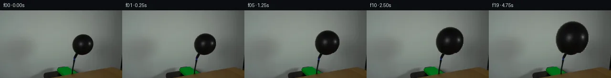

![首帧]()

Round 00
2026-11-05T19:03:26.991192+00:00像素候选变化代码 +146/−0inspection 更新
pixels e59f718f160af8d1 · code 075e5270727007b3
查看本轮 generate.py 真实 diff
--- previous/generate.py
+++ current/generate.py
@@ -0,0 +1,146 @@
+"""PixelWorld case_0037 — black balloon inflated by a pump.
+
+Method (local pixel ops only):
+ * extract the frame-0 balloon body as an RGBA sprite (flood-filled core +
+ antialiased rim unmatted against a reconstructed wall plate);
+ * build a clean wall plate once (nearest-neighbour init + Laplace diffusion
+ of the original balloon footprint, weak static grain);
+ * frames 01-19 composite the body sprite, bilinear-warped about the fixed
+ knot anchor with monotonic eased growth plus small per-stroke pump pulses;
+ * knot/neck (y>=91), hose, pump, table and wall are never altered.
+Frame 00 is the untouched first_frame.png (byte-identical copy after saving).
+"""
+from pathlib import Path
+import shutil
+import numpy as np
+from PIL import Image, ImageDraw
+from scipy import ndimage
+import artifact_io
+
+CASE = Path(__file__).parent
+TMP = CASE / '.tmp'; TMP.mkdir(exist_ok=True)
+
+ANCHOR_X, ANCHOR_Y = 171, 91 # fixed knot point; body sprite rows <= 90
+FILL_TOP, FILL_BOTTOM = 18, 91 # rows we ever modify
+FILL_LEFT, FILL_RIGHT = 125, 216
+
+# ---------------------------------------------------------------- load frame 0
+f0 = np.array(Image.open(CASE / 'first_frame.png').convert('RGB'))
+assert f0.shape == (144, 256, 3)
+H, W, _ = f0.shape
+fimg = f0.astype(np.float64)
+lum = fimg.mean(2)
+YY, XX = np.mgrid[0:H, 0:W]
+
+# ------------------------------------------------------- balloon core (frame0)
+m = (lum < 80) & (XX >= 148) & (XX <= 200) & (YY >= 48) & (YY <= 95)
+m &= ~((YY >= 94) & (XX < 165)) # drop the black hose corridor
+lab, n = ndimage.label(m, structure=np.ones((3, 3), int))
+seed_lab = lab[70, 175]
+core = lab == seed_lab
+core &= YY <= 90 # only the inflating body is a sprite
+
+# --------------------------------- clean wall plate behind the original body
+fill_box = (XX >= FILL_LEFT) & (XX < FILL_RIGHT) & (YY >= FILL_TOP) & (YY < FILL_BOTTOM)
+mask0 = ndimage.binary_dilation(core, iterations=2) & fill_box
+
+plate = fimg.copy()
+# nearest-neighbour initialisation from unmasked wall pixels
+dist, idx = ndimage.distance_transform_edt(mask0, return_indices=True)
+for c in range(3):
+ plate[..., c][mask0] = fimg[..., c][idx[0][mask0], idx[1][mask0]]
+
+# extend mask to the full antialiased rim (vs. the coarse plate estimate)
+edge = fill_box & (lum < plate.mean(2) - 10)
+fill_mask = mask0 | edge
+dist, idx = ndimage.distance_transform_edt(fill_mask, return_indices=True)
+for c in range(3):
+ plate[..., c][fill_mask] = fimg[..., c][idx[0][fill_mask], idx[1][fill_mask]]
+
+# harmonic smoothing inside the masked footprint only
+pm = plate.mean(2)
+for _ in range(2500):
+ sm = (np.roll(pm, 1, 0) + np.roll(pm, -1, 0) + np.roll(pm, 1, 1) + np.roll(pm, -1, 1)) * 0.25
+ pm[fill_mask] = sm[fill_mask]
+# rebuild rgb plate from smoothed luminance, keeping local chroma of f0
+chroma = fimg - lum[..., None]
+plate = np.clip(pm[..., None] + chroma, 0, 255)
+# weak fixed grain so revealed rings match the wall render (static across frames)
+rng = np.random.default_rng(7)
+grain = rng.normal(0, 0.8, (H, W, 1))
+plate = np.where(fill_mask[..., None], np.clip(plate + grain, 0, 255), fimg)
+
+# ------------------------------------------------------- body RGBA sprite (f0)
+Lp = plate.mean(2)
+sprite_a = np.zeros((H, W))
+# alpha: 1 inside the core, fractional across the antialiased rim
+rim = fill_box & (~core) & (Lp - lum > 8)
+a_rim = np.clip((Lp - lum) / np.maximum(Lp - 30, 1), 0, 1)
+sprite_a[core] = 1.0
+sprite_a[rim] = a_rim[rim]
+sprite_a[YY > 90] = 0.0 # neck/knot stays static
+# un-matte foreground colour
+a3 = np.clip(sprite_a, 1e-6, 1)[..., None]
+sprite_rgb = np.clip((fimg - (1 - a3) * plate) / a3, 0, 255)
+
+# ------------------------------------------------------------- render 20 frames
+frames = [f0.copy()]
… diff truncated; 59 more lines …